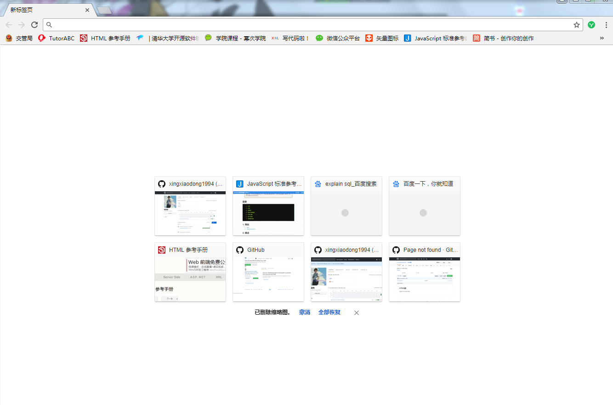
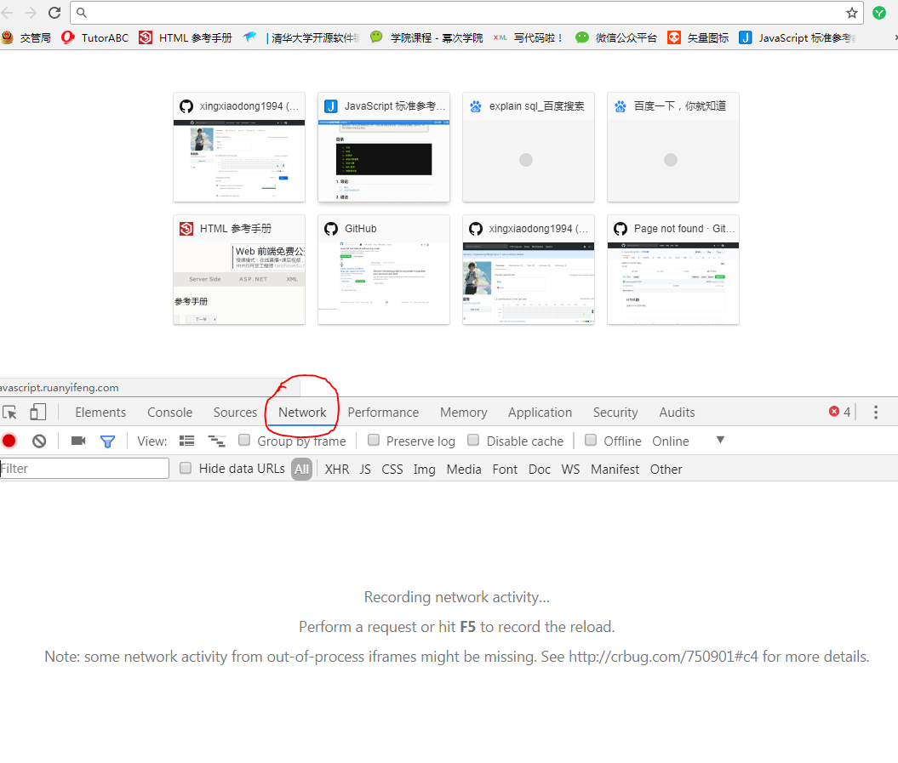
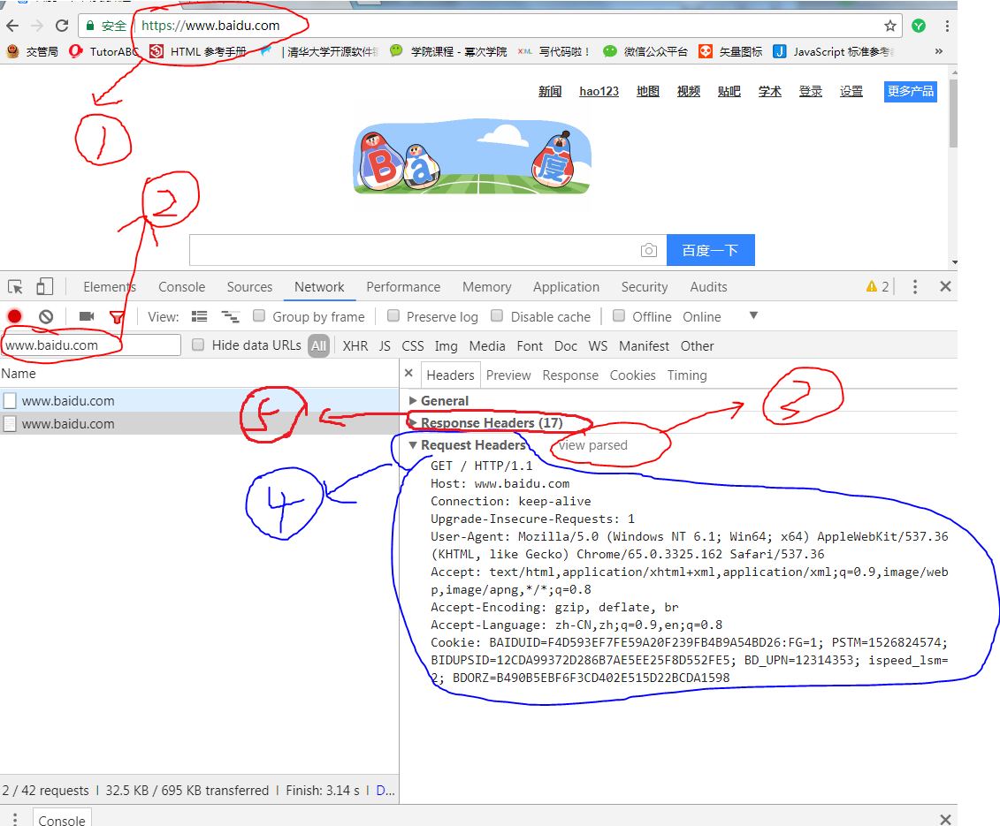

一：定义
HTTP全称（Hypertext Transfer Protocol）超文本 传输 协议；
在我们浏览上网时，会进行下面操作
- 第一步：打开浏览器，我用的是谷歌浏览器，打开后如下图所示：
- 
- 第二步：输入网址；例如"https://www.baidu.com"
- 此时加载出百度页面，我们就可以浏览网页了。
但是实际上，在我们输入网址到加载出页面之间，浏览器是做了许多事情的；
毕竟百度的网页不可能凭空出现。浏览器做了哪些我们不知道的事情呢？
- 第一步：你输入网址："https://www.baidu.com"
- 第二步，浏览器会根据你输入的网址，向百度服务器发出一个请求：
说“百度服务器啊！我想浏览你们百度首页”
- 第三步，百度服务器会根据你浏览器的请求，做出一个响应：
“好的浏览器，这是我的百度页面，我发送给你”
- 第四步：浏览器接受百度服务器发过来的百度页面，显示在浏览器网页上
- 第五步：你就可以浏览百度网页了！
这其中浏览器如何发消息，服务器如何做出响应，就是Http协议规定的内容
- 如果你也和我一样用的谷歌浏览器，我们可以通过以下方式查看这个过程
- 第一步，打开谷歌浏览器，然后右键点击检查,出现下图内容，然后点击
图中的Network选项
- 
- 第二步，如下图所示，先在地址栏输入网址"https://www.baidu.com"
- 
- 然后在标红色的第二处输入地址"www.baidu.com"；
- 然后查看右边的"Request Headers",
别忘了点击"「view source」"按钮
- 你就可以看到第4部分（蓝笔标记的部分），浏览器发送的请求，翻译过来意思就是
“百度服务器啊！我想浏览你们百度首页”
- 第三步，如何查看百度服务器的响应呢？，这个更简单，你只需要打开上图的第5部分
"Response Headers"，别忘了点击"「view source」"按钮
- 你就可以看到第5部分，服务器发送的响应，翻译过来意思就是
“好的浏览器，这是我的百度页面，我发送给你”
- 是不是很棒！
如果你想要深入了解一下http协议到底写了些啥东西？
- 首先如果你是Windows系统，你需要安装Git这个软件
- 如果你安装了Git，那么我们可以一起开始学习。
- 1：在Git命令行输入curl -s -v -H "xiaodong: xxx" -- "https://www.baidu.com"按回车
- 它会出现很多行代码，你可以看到，刚开始它给你一个百度首页HTML文件，接着很多行以*号开头的注释，
然后你还会看到以>号开头的6行语句，这就是你发送的请求
"
> GET / HTTP/1.1 (第1行，“GET” 表示请求 “/”表示默认路径 “ HTTP/1.1”表示HTTP协议和版本号 )
> Host: www.baidu.com （第2行 host表示域名）
> User-Agent: curl/7.59.0 （第3行 User-Agent表示用户代理 ）
> Accept: */* （第4行 Accept表示浏览器接受百度服务器传的所有文件）
> xiaodong: xxx （第5行 无意义，这是我输入命令是自己编的一个属性ﾉ( • ̀ω•́ )✧）
> （第6行 空着的一行，和区分下面发的内容）
"
通俗翻译就是“百度服务器啊！我想浏览你们百度首页”
然后你还会看到以<号开头的多行语句，这就是你收到的响应
"
< HTTP/1.1 200 OK （第1行 HTTP/1.1 表示http协议和版本号 200 状态码表示响应成功 OK 表示成功）
< Accept-Ranges: bytes （第2行 表示单位是比特）
< Cache-Control: private, no-cache, no-store, proxy-revalidate, no-transform （第3行 我也不清楚啥意思）
< Connection: Keep-Alive （第4行 我也不清楚啥意思）
< Content-Length: 2443 （第5行 响应文件大小）
< Content-Type: text/html （第6行 响应文件类型）
< Date: Fri, 15 Jun 2018 12:40:14 GMT （第7行 响应日期）
< Etag: "588603e7-98b" （第8行 什么鬼？）
< Last-Modified: Mon, 23 Jan 2017 13:23:51 GMT （第8行 最后修改日期）
< Pragma: no-cache （第10行 我也不清楚啥意思）
< Server: bfe/1.0.8.18 （第11行 服务器代号）
< Set-Cookie: BDORZ=27315; max-age=86400; domain=.baidu.com; path=/ （第12行 什么鬼？）
< （第13行 空行为了和下面内容做区分）
"
- 通俗翻译就是“好的浏览器，这是我的百度页面，我发送给你”
- 是不是很有趣(･ω<)☆ 你还可以试试以下命令，
- 2：在Git命令行输入curl -X POST -d "1234567890" -s -v -H "xiaodong: xxx" -- "https://www.baidu.com"按回车
- 看看返回什么结果？
上面是我对http的基本印象，如果你想学习更多HTTP协议知识，可以看下面的链接
更多HTTP协议知识